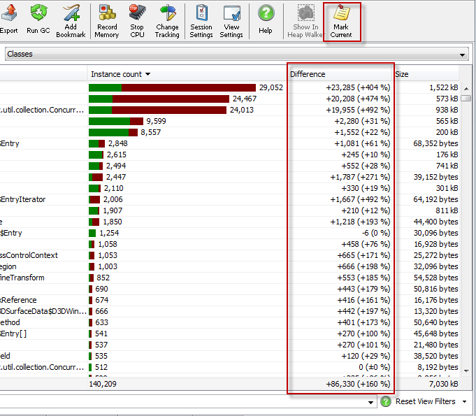

1. Introduction
In contrast to
allocation recording,
where you can restrict the displayed objects to a certain period of time, a common situation
is that you want to retain all recorded objects but still see the difference of object
allocations with respect to a certain point in time. In particular, you might be interested
in which classes have a decreasing allocation count, something that would not be possible
with allocation recording.

2. Memory views with differencing
By default the difference column is not displayed. Only when you choose
View->Mark current values or the corresponding toolbar button,
the difference column is shown as the last column.
The following views in JProfiler have an optional difference column:
-
all objects view and recorded objects view
In the all objects view and the recorded objects view,
the difference column displays the number of currently allocated objects
of a class minus the number at the point when the values were marked.
-
allocations hotspot view
In the allocations hotspot view,
the difference column is similar to the recorded objects view,
just that the number of allocations in a method are measured. If you select a class
for the hotspots view with the "Change selection" button, the number of allocations
is additionally for a single package or class only.
In most cases you'll be interested in sorting the view by the values in the difference column.
There are two sort modes that can be adjusted in the view settings dialog:
-
absolute ordering
With absolute ordering, the absolute value of the difference will be used for sorting.
This is appropriate if you're interested in the biggest changes.
-
normal ordering
With normal ordering, you'll have positive differences at the top, then a usually long
list of zero differences and finally the negative differences. This is the right setting
if you're looking for a memory leak and are only interested in positive differences.
3. Differencing and the heap walker
The difference column only shows a calculation, there's no fixed set of objects behind this
number. Because of that, it is not possible to select the "difference objects" and
work with them in the heap walker. To select objects based on their time of creation,
please see the
article on allocation recording.
4. The class tracker
The class tracker view provides a way to capture the history
of instance counts over time for selected classes or packages in the form or a graph. However,
you have to select the tracked classes or packaged in advance, so the class tracker is best used on classes or packages
that appear suspicious from the differencing in the all objects or recorded objects views.